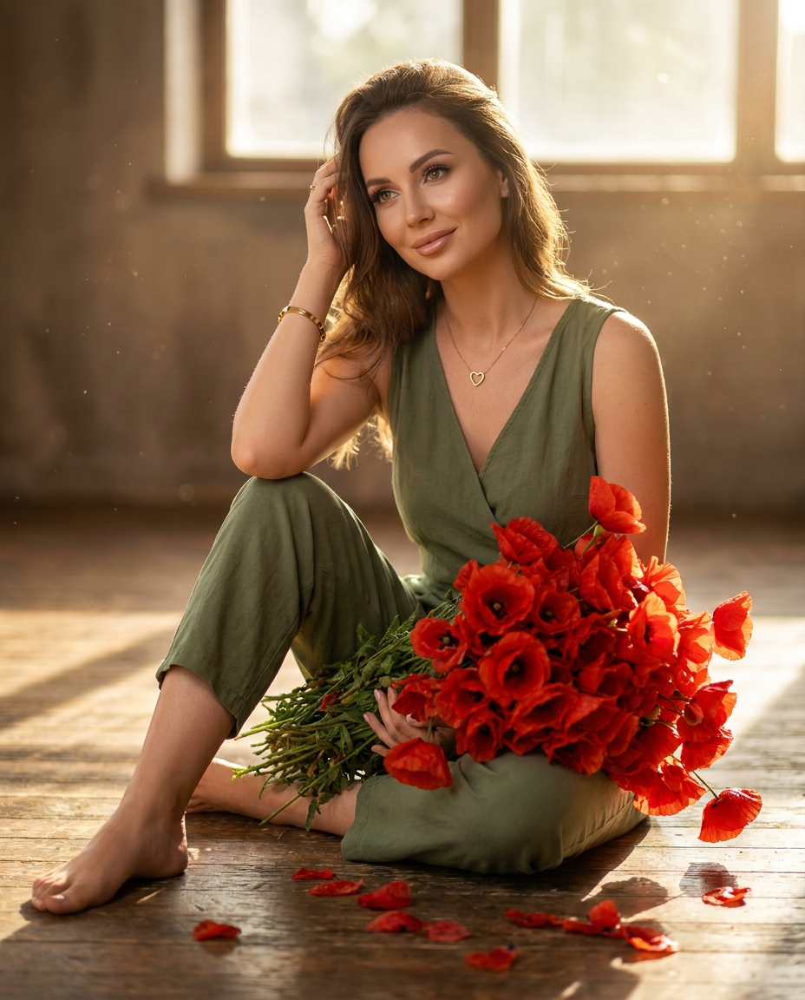
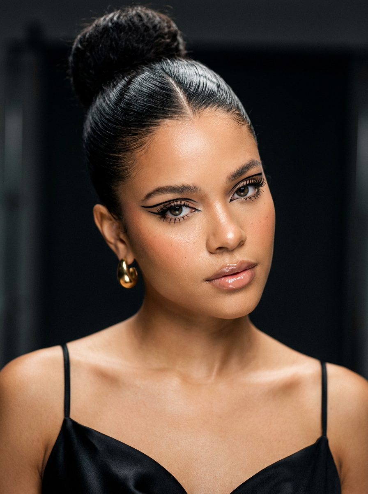
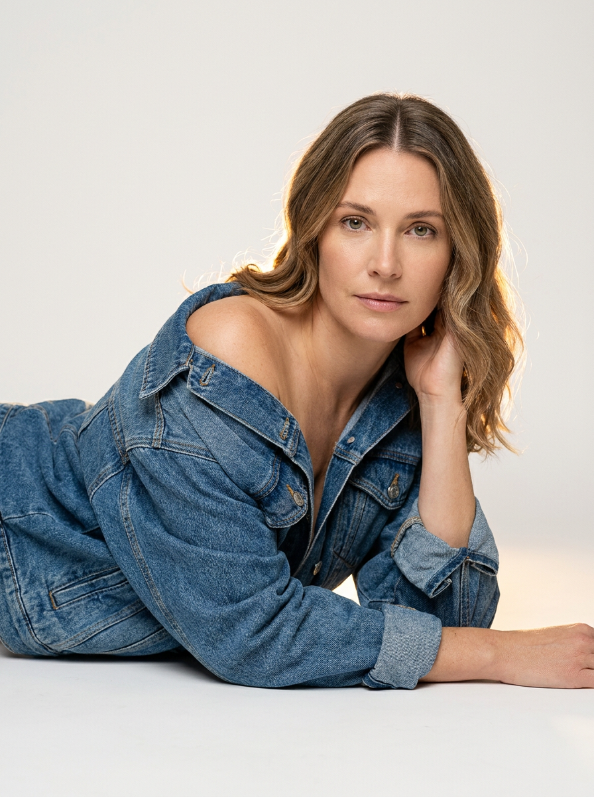
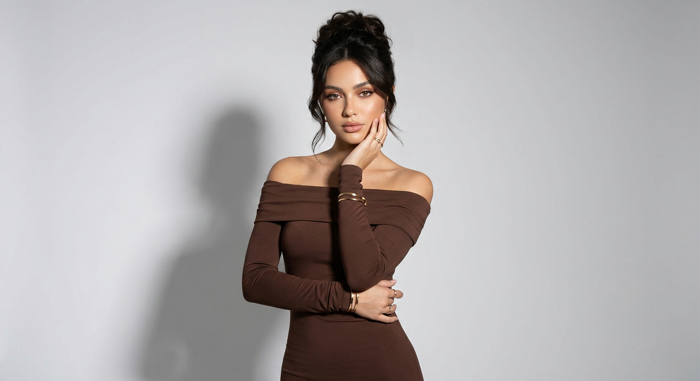
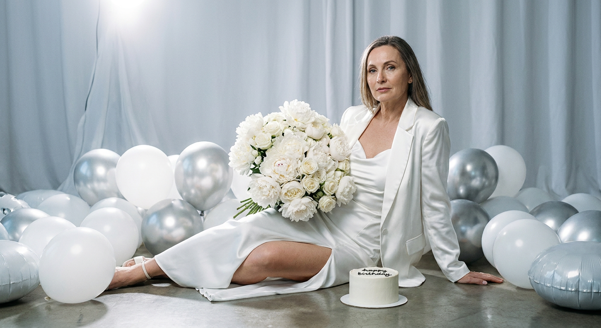
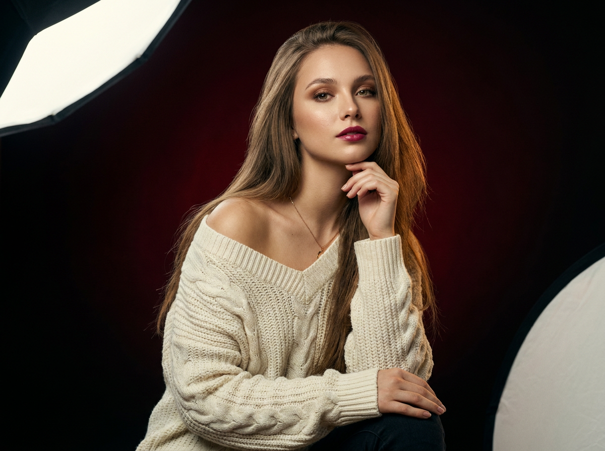
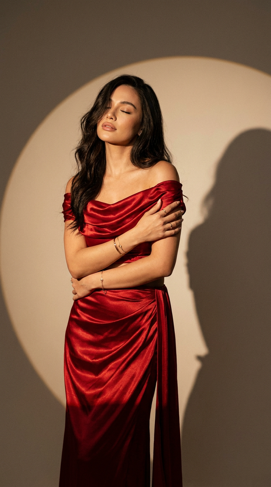
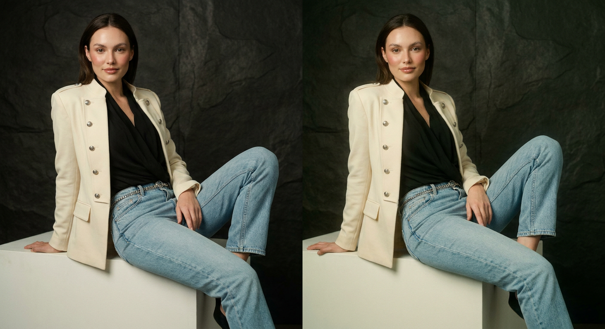
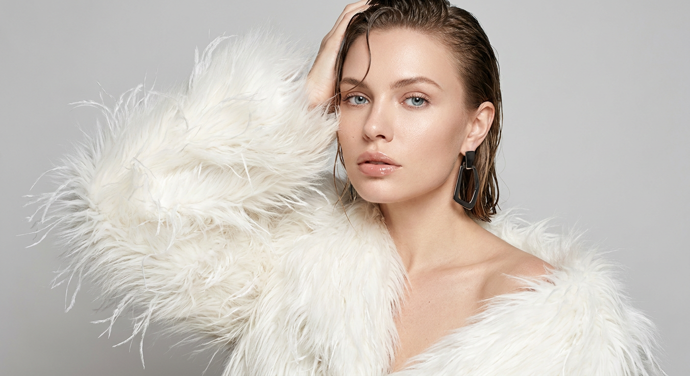
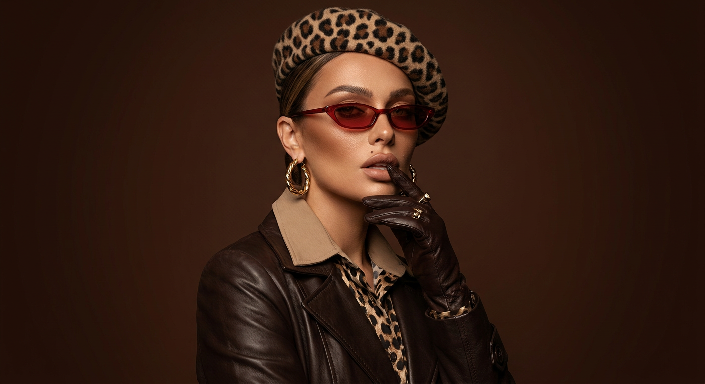

Женская ИИ-фотосессия в студии: 10 промптов для нейросети

Студийная фотосессия обычно требует визажиста, стилиста, аренды зала и нескольких часов съёмки. Нейросеть помогает получить выразительные кадры по референсу, когда нет времени, бюджета или подходящей локации.
В подборке — десять сценариев для женского образа: спокойный портрет на полу, графичный beauty-кадр, снимки с цветами и тортом, драматичный бордовый фон, сатиновый костюм, джинсовый fashion и ретро-стилизация.
Как сгенерировать такое фото: пошагово
Нужен снимок анфас при ровном свете, лицо в кадре целиком, без тёмных очков и головных уборов. Разрешение от 1000 пикселей по короткой стороне. Чем чётче исходник, тем точнее модель повторит черты.
Выберите сценарий ниже и нажмите «Копировать» — текст уйдёт в буфер целиком, вместе с командой сохранения внешности. Эта команда стоит первой строкой и отвечает за то, чтобы на выходе было ваше лицо, а не случайное.
Кнопка «Сгенерировать» рядом с каждым промптом открывает модель в новой вкладке. Nano Banana Pro работает с референсом лица — в отличие от моделей, которые генерируют портрет с нуля и узнаваемость теряют.
Промпт — в поле ввода, портрет — через загрузку референса. Порядок значения не имеет, но без референса команда сохранения внешности работать не будет: модели нечего сохранять.
Для сторис и ленты берите 9:16, для превью и обложек — 4:3. Первый результат редко идеален: если поза или свет ушли не туда, поправьте соответствующую часть промпта и запустите заново. Обычно хватает двух-трёх итераций.
10 промптов для генерации
1. Нюдовый портрет на полу
Строго сохранить внешность по загруженному референсу: черты лица, пропорции, мимику и текстуру кожи без изменений. Гиперреалистичная студийная фотография девушки с референса, вертикальный формат 4:5, высокая детализация и точный акцент на лице, фигуре и естественных пропорциях. Модель сидит на полу, слегка развернув корпус в сторону камеры. Поза расслабленная, женственная, без скованности; одна рука легко касается волос, будто девушка поправляет прядь. Взгляд направлен немного в сторону, на лице спокойная мягкая улыбка и тёплое умиротворённое выражение. Нюдовый макияж: ровный тон, мягкая стрелка, длинные чёрные ресницы, деликатный хайлайтер на скулах, нюдовые губы с прозрачным блеском. Кожа реалистичная, с порами, микрорельефом и естественными несовершенствами, без пластикового эффекта. Мягкий студийный свет, чистая композиция, фотореализм.
2. Графичный beauty-портрет

Строго сохранить внешность по загруженному референсу: черты лица, пропорции, мимику и текстуру кожи без изменений. Ультрареалистичный вертикальный beauty-fashion портрет в формате 3:4. Крупный план от плеч до макушки, лицо модели расположено строго по центру, камера находится на уровне глаз. Волосы уложены в объёмные локоны и собраны в высокий гладкий пучок; заметен чёткий центральный пробор, волосы чистые, блестящие, без случайных торчащих прядей, но с живой текстурой. Макияж выразительный и графичный: длинные двойные чёрные стрелки вытянуты к вискам, ресницы густые, разделённые и равномерно прокрашенные без комочков. Тон кожи безупречно ровный, однако видны поры и естественный микрорельеф. Добавить аккуратный светлый хайлайтер, нейтральные губы с мягким сатиновым финишем. Студийный beauty-свет, резкость на глазах, дорогая editorial-эстетика.
3. Джинсовый портрет лёжа

Строго сохранить внешность по загруженному референсу: черты лица, пропорции, мимику и текстуру кожи без изменений. Фотореалистичный студийный портрет в вертикальном формате 3:4 на однородном светло-молочном фоне. Фон абсолютно чистый: без фактуры, градиентов и заметных теней от софитов. Девушка лежит на боку, опираясь на согнутую руку; локоть и предплечье образуют естественную опору. Корпус вытянут горизонтально вдоль кадра, ноги и нижняя часть тела уходят за нижнюю границу либо мягко согнуты. Поза расслабленная, без напряжения в плечах и шее. Взгляд прямо в объектив, выражение спокойное, чуть отстранённое, с лёгкой полуулыбкой или без неё; в глазах живой catchlight. На модели объёмная синяя джинсовая куртка oversized с реалистичной фактурой денима. Мягкий рассеянный свет, натуральная кожа, точная передача лица и ткани, аккуратная журнальная композиция.
4. Минималистичный editorial-кадр

Строго сохранить внешность по загруженному референсу: черты лица, пропорции, мимику и текстуру кожи без изменений. Сверхреалистичный студийный fashion beauty portrait совершеннолетней молодой женщины в вертикальном кадре от талии или бёдер до головы. Фон чистый, светло-серый или белый, без лишних деталей. Корпус модели развёрнут на три четверти, голова повёрнута к объективу, взгляд прямой и уверенный. Поза элегантная и естественная: одна рука согнута, ладонь мягко поддерживает подбородок или щёку, вторая проходит поперёк талии и подчёркивает силуэт. Атмосфера дорогой минималистичной editorial-съёмки — спокойная, утончённая, современная и женственная. Свет мягкий, но объёмный, с деликатным контуром по лицу и плечам. Сохранить натуральную текстуру кожи, индивидуальные пропорции, живой взгляд и реалистичную анатомию. Высокая детализация, fashion-журнал, без усреднённой модельной внешности.
5. Белая вечеринка с цветами

Строго сохранить внешность по загруженному референсу: черты лица, пропорции, мимику и текстуру кожи без изменений. Стилизованная фотореалистичная студийная сцена с элегантной женщиной, вертикальная композиция с акцентом на образ и реквизит. Модель сидит на полу полубоком, корпус слегка развёрнут. На ней белое сатиновое платье с высоким разрезом, открывающим ногу, и белый жакет поверх платья. Сатиновая ткань мягко отражает свет и выглядит благородно, без пересветов. Вокруг на полу лежат многочисленные бело-серебристые шары разных размеров с металлическими отблесками. В руках — очень большой пышный букет из белых пионов и роз, занимающий передний план и частично закрывающий платье. У ног стоит небольшой минималистичный белый одноярусный или двухъярусный торт с надписью «happy birthday». Мягкий праздничный студийный свет, чистый фон, натуральная кожа, реалистичные лепестки, сатин и отражения.
6. Бордовый портрет в свитере

Строго сохранить внешность по загруженному референсу: черты лица, пропорции, мимику и текстуру кожи без изменений. Гиперреалистичный редакционный студийный портрет молодой девушки в горизонтальном формате 4:3. Кадрирование по пояс, камера на уровне глаз. Модель сидит на высоком стуле, расположена немного левее центра по правилу третей, перед ней оставлено пространство по направлению взгляда. Корпус слегка повёрнут в три четверти. Спина прямая, одна рука спокойно лежит на колене, вторая поднята к подбородку или скуле; голова чуть наклонена к этой руке. Взгляд направлен немного мимо камеры, выражение мечтательное и уверенное, плечи расправлены, шея открыта. На девушке объёмный свитер крупной вязки цвета слоновой кости, спущенный с одного плеча. Фон глубокого тёмно-бордового оттенка с мягким переходом в чёрный по краям и лёгким velvet-эффектом, без фактуры. Драматичный, но мягкий свет, реалистичная кожа и дорогая журнальная цветокоррекция.
7. Алый сатиновый силуэт

Строго сохранить внешность по загруженному референсу: черты лица, пропорции, мимику и текстуру кожи без изменений. Фотореалистичный fashion-editorial портрет взрослой женщины в вертикальном формате 9:16, полный рост или кадр по колено. Девушка стоит в студийной фотозоне, руки скрещены на груди: одна ладонь лежит на противоположной руке. Голова слегка запрокинута, глаза закрыты, выражение расслабленное, чувственное, но сдержанное и утончённое. На модели роскошный алый или бордово-красный сатиновый комплект: драпированный топ с открытыми плечами и длинная юбка в тон. Тяжёлая блестящая ткань образует глубокие складки и мягкие переливы, подчёркивает ключицы и линии фигуры. Волосы длинные, тёмные, волнистые, с боковым пробором; одна прядь частично закрывает лицо. Добавить тонкие золотые украшения, минималистичный макияж, гладкую сияющую кожу с естественной текстурой. Чистый фон, мягкий контровой свет, изысканная editorial-эстетика.
8. Кремовый жакет на платформе

Строго сохранить внешность по загруженному референсу: черты лица, пропорции, мимику и текстуру кожи без изменений. Люксовый фотореалистичный fashion-портрет в студии, средний план от пояса до макушки, камера расположена немного ниже уровня глаз. На заднем плане — текстурированный тёмный каменный фон. Модель сидит боком на чистой белой геометрической платформе, тело выстроено по диагонали для выразительных линий. Одна нога согнута в колене, другая вытянута вниз; рука расслабленно лежит рядом с коленом, голова слегка наклонена к камере. Выражение лица спокойное и уверенное. Образ состоит из структурированного кремового пиджака в военном стиле с декоративными серебряными пуговицами, мягкого чёрного драпированного топа и светло-голубых прямых джинсов. На талии тонкий серебряный пояс-цепочка с небольшой круглой пряжкой. Чистый современный fashion-editorial, объёмный боковой свет, реалистичные материалы, высокая детализация и точная анатомия.
9. Мокрый look с голубыми глазами

Строго сохранить внешность по загруженному референсу: черты лица, пропорции, мимику и текстуру кожи без изменений. Фотореалистичный студийный beauty-портрет изящной женщины, камера смотрит прямо на модель. Кожа светлая, фарфоровая, с ровным тоном, но без потери пор, микрорельефа и лёгких естественных несовершенств. Глаза яркие светло-голубые, пронзительные, с уверенным прямым взглядом и естественным бликом на радужке. Губы полные, покрыты влажным глянцевым блеском нюдово-розового оттенка с объёмным свежим финишем. Волосы уложены назад в стиле wet look, у лба сохранена характерная отдельная прядь — слегка завитая или свободно лежащая. Свет подчёркивает скулы, линию носа и блеск губ, но не превращает кожу в пластик. Минималистичный фон, плотный editorial-свет, резкость на глазах и губах, натуральная цветопередача, дорогая beauty-реклама без лишних деталей.
10. Ретро-образ с красными очками

Строго сохранить внешность по загруженному референсу: черты лица, пропорции, мимику и текстуру кожи без изменений. Ультрадетализированный high-fashion editorial портрет по пояс на тёплом шоколадно-коричневом студийном фоне. Использовать драматичный fashion-свет с выразительным моделированием лица и мягкими тенями. На женщине леопардовый шерстяной берет, сдвинутый набок, узкие красные полупрозрачные солнцезащитные очки в тонкой ретро-оправе, крупные витые золотые серьги-кольца и несколько золотых колец. Тёмно-коричневое длинное кожаное пальто надето поверх бежевого структурированного воротника и блузы с леопардовым принтом. На руках кожаные перчатки глубокого коричневого оттенка; одна рука поднята к губам, создавая театральную fashion-позу. Волосы гладко убраны под берет. Макияж редакционный: чёткие брови, тёплые коричневые тени, матовая бронзовая кожа, подчёркнутые скулы, полные слегка приоткрытые нюдовые губы и небольшая родинка над верхней губой. Плечи немного развёрнуты, взгляд уверенный.
Что важно учесть в этом стиле
Студийный fashion-кадр держится на трёх вещах: понятной позе, контролируемом свете и материале одежды. Если описать только внешность и наряд, нейросеть часто выдаёт случайную пластику рук, плоскую ткань или неубедительный фон.
Для портретов задавайте формат кадра, точку съёмки и участок кадрирования. Для образов в полный рост отдельно прописывайте положение ног, направление корпуса и то, что должно попасть на передний план. Кожу лучше описывать как реалистичную: с текстурой, порами и микрорельефом.
Идеи для вариаций
- Замените молочный фон на холодный серый, пыльно-розовый или графитовый.
- Попросите мягкий дневной свет из большого окна вместо классических софитов.
- Добавьте крупный цветок, зеркало, прозрачный стул или геометрический постамент.
- Попробуйте объектив 85 мм для портрета или 50 мм для кадров по пояс.
- Поменяйте сатин на бархат, деним — на матовую кожу, а свитер — на жакет.
- Сделайте серию из пяти кадров с одинаковым макияжем, но разными поворотами головы.
Как собрать свой промпт
Сначала укажите тип снимка: портрет, кадр по пояс или полный рост. Затем опишите фон, положение тела, направление взгляда, одежду, макияж и характер света. Технические параметры лучше ставить в начале или конце: вертикальный 4:5, камера на уровне глаз, объектив 85 мм, высокая детализация.
Один промпт — одна главная идея. Если нужен узнаваемый результат по референсу, отдельно задайте приоритет лица, волос, возраста и пропорций. После первой генерации меняйте по одному параметру: позу, фон или одежду. Обычно для удачной серии требуется 4–8 попыток.
Ошибки, из-за которых кадр не получается
- Слишком много задач в одном описании. Несовместимые позы, ракурсы и источники света запутывают модель.
- Не указан формат кадра. Без пропорций нейросеть может обрезать ноги, букет или важную часть одежды.
- Нет описания рук. Именно кисти чаще всего получают лишние пальцы и неестественные сгибы.
- Материал назван без светового поведения. Для сатина, кожи и металла добавляйте блеск, складки и отражения.
- Слишком сильная ретушь. Формулировки про идеальную кожу без пор приводят к пластиковому лицу.
- Постоянно меняются все параметры. Так сложно понять, какая правка улучшила или испортила результат.
Частые вопросы
Как сделать такое ИИ-фото бесплатно?
Для первых попыток подойдут Kandinsky и Шедеврум: они позволяют генерировать изображения без оплаты, но работа с фотографией-референсом, точное сохранение лица и число доступных генераций могут быть ограничены. В Krea AI и Arena.ai удобнее тестировать разные варианты и референсы, однако бесплатный доступ обычно имеет лимиты, очередь или ограничения на разрешение. Результат зависит от качества исходного фото и конкретной модели.
Как сохранить сходство с человеком на фото?
Загрузите чёткий референс без сильных фильтров, где хорошо видны глаза, овал лица и линия челюсти. В промпте отдельно укажите, что нужно сохранить возраст, пропорции, цвет глаз, волосы и индивидуальные черты. Не меняйте одновременно лицо, ракурс и стилизацию: при резкой смене угла сходство часто снижается.
Какой формат выбрать для женской фотосессии?
Для портрета и публикации в соцсетях удобно использовать вертикальные 3:4, 4:5 или 9:16. Формат 4:3 подходит для кадров по пояс и горизонтальных обложек. Если в сцене есть платье, ноги или крупный реквизит, заранее выбирайте полный рост и оставляйте запас по краям.
Почему нейросеть искажает руки и надписи?
Кисти сложнее всего интерпретировать в динамичных позах, особенно когда они частично скрыты одеждой или реквизитом. Описывайте каждую руку отдельно и просите естественную анатомию. Текст на торте, вывеске и одежде генераторы нередко искажают, поэтому надпись лучше исправить после генерации в графическом редакторе.